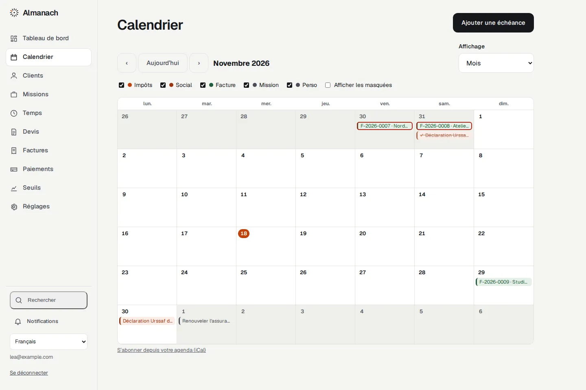

Ne rate plus une échéance
Déclarations, paiements, fins de mission et factures à relancer, dans un calendrier en mois, semaine, liste ou agenda.
- Rappels par e-mail ou par ntfy, avec des heures calmes.
- Un flux iCal à ajouter dans ton agenda.
- Chaque échéance renvoie à sa source officielle.
